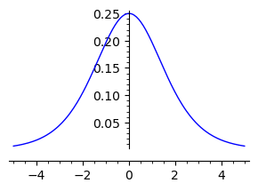
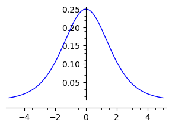
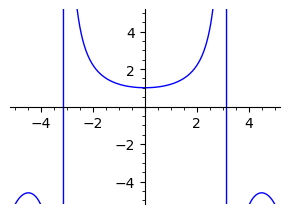
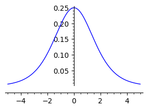
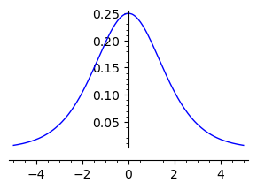
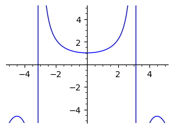

Mathematical and Computational Methods#
Calculus Review#
Ten Important Identities
The quadratic equation : \(ax^2+bx+c\) has 2 roots \(r=\large\frac{-b\pm\sqrt{b^2-4ac}}{2a}\)
Fundamental trigonometric identity : \(\cos^2{\theta}+\sin^2{\theta}=1\)
Trigonometric Definitions : \(\sec{\theta}=\frac{1}{\cos{\theta}}\quad\tan{\theta}=\frac{\sin{\theta}}{\cos{\theta}}\quad\csc{\theta}=\frac{1}{\sin{\theta}}\quad\cot{\theta}=\frac{\cos{\theta}}{\sin{\theta}}\)
Double Angle Formulae : \(\cos{2\theta}=\cos^2{\theta}-\sin^2{\theta}\quad\sin{2\theta}=2\sin{\theta} \cos{\theta}\)
Factorization of the difference of squares : \(x^2-a^2=(x+a)(x-a)\)
Geometric Series : \(\Sigma^{\infty}_{n=0}x^n=\frac{1}{1-x}\) for \(|x|<1\) and \(\Sigma^{N}_{n=0}x^n= \frac{N!}{n!(N-n)!}x^{N-n}y^n\) for all \(x\).
Binomial Theorem : \((x+y)^N=\sum^{N}_{n=0}\begin{pmatrix}N\\n\end{pmatrix}x^{Nn}y^n=\Sigma^{N}_{n=0}\frac{N!}{n!(N-n)!}x^{N-n}y^n\)
Power series for the exponential : \(e^x=\Sigma^{\infty}_{n=0}\frac{1}{n!}x^n\)
Relation for trig functions to exponentials : \(\cos{\theta}=\frac{1}{2}(e^{i\theta}+e^{-i\theta})\) and \(\sin{\theta}=\frac{1}{2i}(e^{i\theta}-e^{-i\theta}\) n1. Relation of hyp functions to exponentials : \(\cosh{x}=\frac{1}{2}(e^x+e^{-x})\) and \(\sinh{x}=\frac{1}{2}(e^x-e^{-x})\)
m=var('m')
f=(sqrt(20*(100-2*sin(m))/49)+sqrt(2000/49))*cot(m)
pretty_print(f)
for i in [35, 45, 55]:
vy=sqrt(19.6*(100-2*sin(i*pi/180)))
show(n( ( vy*sin(i*pi/180)+sqrt( ((vy*sin(i*pi/180))^2+2*9.8*2 ) ))bb/9.8*vy*cot(i*pi/180) ))
Correct solution:
d=pi/180
x,y=var('vy,ty')
s=solve([ vy*ty==(200-4*sin(35*d)), vy==9.8*ty ],vy,ty,solution_dict=True)
vy=s[1][vy]
ty=s[1][ty]
D=vy*(cos(35*d)/sin(35*d))*(ty+sqrt(200*ty/vy))
D.n()
566.339564823947
f(x)=1/(1+e^x)
show(plot(f(x), (x, -5, 5), figsize=3))
show(plot(f(x)+f(-x), (x, -5, 5), figsize=3))
show(plot(f(x)-f(-x), (x, -5, 5), figsize=3))
show(plot(diff(f(x)), (x, -5, 5), figsize=3))
show(plot(f(x)*(1-f(x)), (x, -5, 5), figsize=3))
show(plot(f(x)*f(-x), (x, -5, 5), figsize=3))
show(plot(x/sin(x), (x, -5, 5), figsize=3, ymin=-5, ymax=5))
 





s=7
x=2
for i in range(5):
x=(x+s/x)/2
show(n(x))
show(n(sqrt(s)))